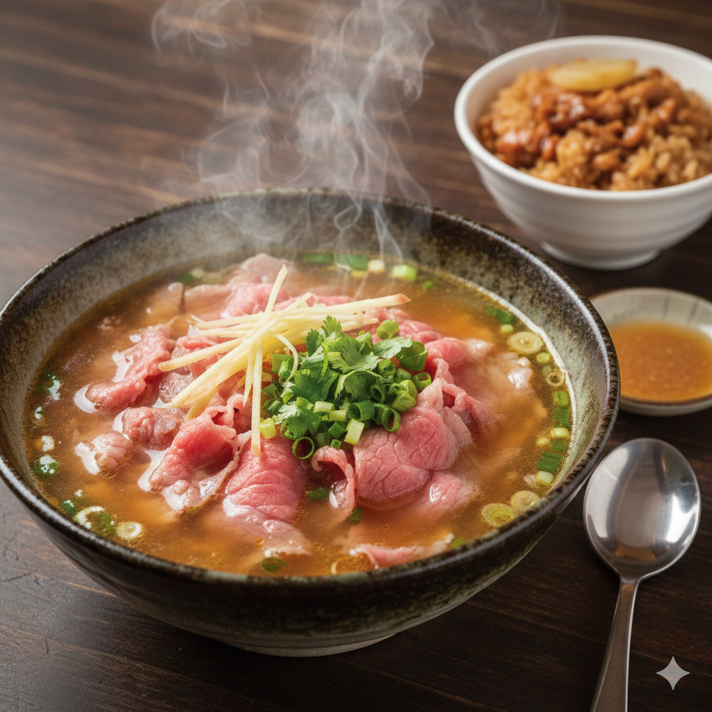

溫體牛肉湯

📜 歷史故事
台南牛肉湯的起源可追溯至早期農業社會，雖然當時牛隻是重要的生產工具，但隨著時代變遷，台南善化設有牛墟（大型牛隻交易市場），保證了新鮮牛肉的供應。這道美食逐漸演變成台南人的日常早餐，強調「現宰現燙」的極致新鮮感。
🛒 需要材料
- 現宰溫體牛肉片
- 牛大骨、洋蔥、蘋果、玉米（熬湯底用）
- 薑絲、米酒
👨🍳 料理方法
- 將牛大骨與蔬果熬煮 6-8 小時，濾出清澈鮮甜的高湯。
- 將生牛肉片切成薄片放置碗中，灑上少許薑絲與米酒。
- 將滾燙的高湯（約 90度）直接淋入碗中，利用餘溫將牛肉燙至粉紅色即可食用。
⬅ 返回首頁